Auxiliar 3: Primera Ley
Seis problemas de primera ley: trayectorias en el diagrama $P$–$V$, trabajo reversible e irreversible de un gas de Van der Waals, y ciclos armados con procesos isocóricos, isotérmicos e isobáricos.
Temas que ejercita
- $\Delta U$ como función de estado frente a $Q$ y $W$ dependientes del camino
- Lectura de trayectorias en un diagrama $P$–$V$ y balance de energía por tramo
- Trabajo reversible de un gas de Van der Waals: integración de $P(V)$
- Trabajo irreversible: expansión rápida y expansión contra el vacío
- Determinación de un parámetro ($b$) a partir de un trabajo medido
- Procesos isocórico, isotérmico e isobárico: $Q$, $W$ y $\Delta U$ en cada uno
- Construcción y cierre de un ciclo en el diagrama $P$–$V$
- Aplicación a un sistema macroscópico (calentamiento de una sala)
Herramientas que hay que tener a mano
Convenio de signos
En este curso $\Delta U = Q - W$, con $W > 0$ cuando el sistema produce trabajo (se expande) y $Q > 0$ cuando entra calor al sistema. Fijarlo antes de escribir la primera ecuación evita errores de signo en cadena.
$\Delta U$ no depende del camino
Es la propiedad que resuelve el P1: si se conoce $\Delta U$ por una trayectoria, vale para todas las demás entre los mismos dos estados. $Q$ y $W$ sí cambian de un camino a otro.
Reversible vs. irreversible
Reversible ⟶ $W = \int P_{\text{sist}}\,dV$, usando la ecuación de estado. Irreversible rápido ⟶ $W = P_{\text{op}}\Delta V$ con la presión externa. Contra el vacío ⟶ $P_{\text{op}} = 0$, luego $W = 0$.
Los tres procesos básicos
Isocórico: $W = 0$, $Q = \Delta U = nC_V\Delta T$. Isobárico: $W = P\Delta V$, $Q = \Delta H = nC_P\Delta T$. Isotérmico (gas ideal): $\Delta U = 0$, $Q = W = nRT\ln(V_f/V_i)$.
Cerrar un ciclo
Sobre un ciclo completo $\Delta U = 0$, luego $W_{\text{neto}} = Q_{\text{neto}}$. Es el chequeo final de cualquier problema de ciclos: si no cierra, hay un error de signo en algún tramo.
Gas diatómico
$\bar C_V = \tfrac52R$ y $\bar C_P = \tfrac72R$, con $\gamma = 7/5$. Se usa en el P3 y en el P5. Para monoatómico: $\tfrac32R$ y $\tfrac52R$, $\gamma = 5/3$.
Fórmulas que se usan



Problemas
- ¿Cuánto calor entra por la trayectoria $adb$ si el trabajo efectuado por el sistema es 15 J? Considerar que $U$ es independiente del camino y que $U_{a\Rightarrow b} = U_b - U_a$.
- Cuando el sistema regresa de $b$ a $a$ siguiendo la trayectoria curva, el valor absoluto del trabajo efectuado por el sistema es 35 J. ¿El sistema absorbe o desprende calor? ¿Cuánto?
- Calcular $\Delta U_{a\to b}$ por la trayectoria $acb$ con $\Delta U = Q - W$. Ese número es el mismo para cualquier camino entre $a$ y $b$.
- (a) Aplicar la primera ley al camino $adb$ con el mismo $\Delta U$ y el $W$ dado, y despejar $Q$.
- (b) Para el retorno $b \to a$: $\Delta U_{b\to a} = -\Delta U_{a\to b}$.
- Determinar el signo del trabajo de retorno: es una compresión (el sistema vuelve a menor volumen), así que $W < 0$ y vale $-35$ J con el convenio del curso. El enunciado da sólo el valor absoluto — asignar el signo es parte del problema.
- Despejar $Q$ y leer su signo: positivo significa que el sistema absorbe calor; negativo, que lo desprende.
- La tasa de expansión es muy grande (rápida).
- Estimar la constante $b$ si la tasa de expansión es despreciable, el proceso es isotérmico y el trabajo entre $V_i$ y $V_f$ es $W = 64{,}807$ L·atm.
- Encontrar $W$ para una expansión violenta contra el vacío.
- (a) "Muy rápida" significa que el sistema no alcanza el equilibrio: el trabajo se calcula con la presión de oposición constante, $W = P_{\text{op}}(V_f - V_i)$, donde $P_{\text{op}}$ es la presión externa (típicamente la presión final del gas).
- (b) "Tasa despreciable" significa reversible: despejar $P$ de la ecuación de Van der Waals e integrar $\int_{V_i}^{V_f} P\,dV$.
- La integral tiene dos términos: $\int \frac{nRT}{V-nb}dV$ da un logaritmo, y $\int \frac{an^2}{V^2}dV$ da la diferencia de recíprocos.
- Igualar la expresión obtenida al valor dado (64,807 L·atm) y despejar $b$. Es la única incógnita, pero aparece dentro del logaritmo: hay que resolver numéricamente o despejar exponenciando.
- (c) Contra el vacío $P_{\text{op}} = 0$, luego $W = 0$ sin importar la ecuación de estado ni cuánto se expanda el gas.
- Comparar los tres resultados: reversible $>$ irreversible rápido $>$ contra el vacío. Ese orden debe cumplirse siempre.
- Diagrama $P$–$V$.
- Calcular $P$, $V$ y $T$ en cada uno de los estados.
- Calcular el trabajo neto del ciclo y el calor asociado al calentamiento isocórico.
- (b) Estado 1: aplicar $PV = nRT$ con los datos dados para obtener $V_1$.
- Estado 2 (isocórico): $V_2 = V_1$ y $P_2 = 2P_1$. Por la ley de estado, $T_2 = 2T_1$.
- Estado 3 (isotérmico desde 2): $T_3 = T_2$ y $V_3 = 2V_2$, de donde $P_3 = P_2/2 = P_1$. Verificar que este estado efectivamente conecta con el inicial por una isóbara — el ciclo debe cerrar.
- (a) Dibujar: una vertical hacia arriba (isocórico), una hipérbola descendente (isotérmico) y una horizontal hacia la izquierda (isobárico).
- (c) Trabajo por tramo: isocórico $W = 0$; isotérmico $W = nRT_2\ln(V_3/V_2)$; isobárico $W = P_1(V_1 - V_3)$, negativo por ser compresión.
- Sumar los tres para el trabajo neto. Como el ciclo recorre el diagrama en sentido antihorario, esperar $W_{\text{neto}} < 0$.
- Calor del tramo isocórico: $Q = \Delta U = nC_V(T_2 - T_1)$, con $W = 0$.
- Determinar el cambio de energía interna. Considerar $1\ \mathrm{bar\cdot m^3} = 10^5$ J.
- Si la presión fuese una presión constante $P^*$, ¿cómo afecta esto al desarrollo? ¿A qué se asocia esta situación? Explicitar.
- (a) Integrar $W = \int_{V_1}^{V_2} P\,dV$ con la $P(V)$ dada: el primer término da un logaritmo y el segundo un producto.
- Cuidar los límites: el volumen disminuye, así que $W$ debe salir negativo (se hace trabajo sobre el sistema).
- Convertir el trabajo de bar·m$^3$ a joules con el factor indicado por el enunciado.
- El calor liberado significa $Q < 0$: asignarle el signo antes de sustituir.
- Aplicar $\Delta U = Q - W$ con ambos signos ya fijados.
- (b) Con $P^*$ constante la integral colapsa a $W = P^*\Delta V$, lo que corresponde a un proceso irreversible contra presión externa constante — o a un proceso isobárico cuasiestático. Discutir cuál de las dos lecturas aplica y qué las diferencia.
- Cantidad de calor necesaria para elevar la temperatura hasta $37\,^\circ$C, suponiendo presión constante y aire como gas ideal diatómico con $C_P = \tfrac72R$.
- Minutos necesarios para alcanzar esa temperatura.
- Calcular el volumen de la sala y, con $PV = nRT$ en las condiciones iniciales, los moles de aire.
- (a) A presión constante, $Q = \Delta H = n\bar C_P\Delta T$ con $\Delta T = 12$ K.
- Notar la sutileza: a $P$ constante y volumen fijo, parte del aire sale de la sala al calentarse. El enunciado pide ignorar esto y usar los moles iniciales.
- (b) Potencia total $= 118 \times 125$ W. Dividir el calor por la potencia para obtener el tiempo en segundos y convertir a minutos.
- Chequeo de orden de magnitud: el resultado debe dar unos pocos minutos — coherente con lo rápido que se carga el ambiente en una sala llena.
- Despejar $P$ de la ecuación dada: es una Van der Waals con $b = 0$ y $a = 10^6$ kPa·m$^6$/kmol$^2$.
- Convertir los volúmenes totales a volúmenes molares dividiendo por 0,5 kmol, o bien trabajar con la forma extensiva de la ecuación desde el principio. Mantener una sola convención.
- Integrar $W = \int P\,dV$ a $T$ constante: sale un logaritmo más un término en $1/\bar V$.
- Verificar unidades: kPa·m$^3$ = kJ, así que el resultado sale directamente en kilojoules.
- Comparar con el resultado que daría el gas ideal ($nRT\ln 2$): el término atractivo debe reducir el trabajo obtenido.
Estrategia general
- Antes de cualquier cálculo: escribir el convenio de signos y la primera ley en la forma que se va a usar. La mitad de los errores de este auxiliar son de signo.
- Identificar siempre si el proceso es reversible o irreversible: decide si $W$ se calcula integrando $P_{\text{sist}}(V)$ o multiplicando por $P_{\text{op}}$.
- Para problemas de trayectorias, calcular primero $\Delta U$ por el camino con datos completos y reutilizarlo en los demás.
- En ciclos, tabular estado por estado ($P$, $V$, $T$) antes de calcular energías. Y verificar que el ciclo cierre.
- Chequeo final de todo ciclo: $\sum\Delta U_i = 0$. Si no da cero, hay un signo mal puesto.
- $\Delta U = nC_V\Delta T$ y $\Delta H = nC_P\Delta T$ valen para gas ideal en cualquier proceso, no sólo a $V$ o $P$ constante. Ahorra mucho trabajo.